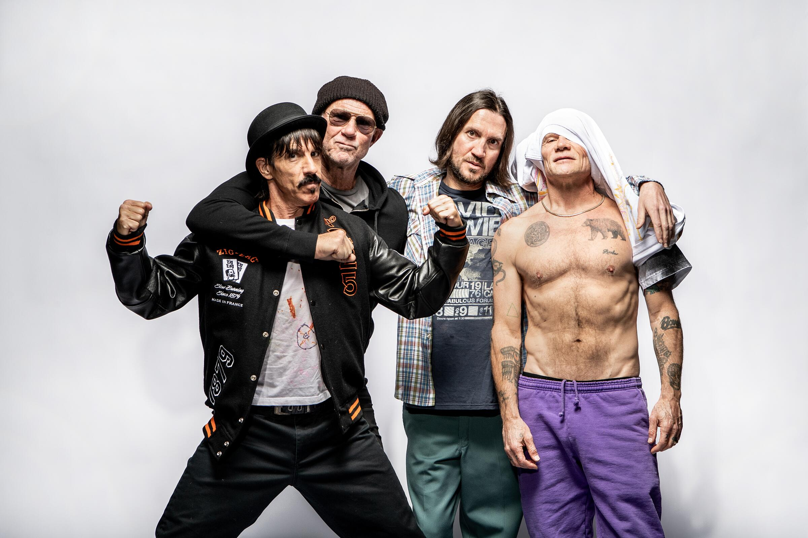

What is Alternative Rock?
Alternative Rock is defined as a style of rock music characterized as unconventional or outside the mainstream. More specifically, it is a blend of elements from punk rock, hard rock, hip hop, folk, and other genres of music. It is much broader than Classic Rock. Some examples of Alternative Rock artists include Radiohead, The Smashing Pumpkins, The Cure, Muse, and Red Hot Chili Peppers.
Well-Known Alternative Rock
Some Alternative Rock Bands
The Smashing Pumpkins
The Smashing Pumpkins is a band that was formed in 1988 and are known for their blend of dreamy melodies and heavy guitar-driven soundscapes. They revolutionized alternative rock and became a favorite band for people worldwide. Some of their most well-known albums are "Siamese Dream" and "Mellon Collie and the Infinite Sadness." The Smashing Pumpkins continue to influence generations of alternative and rock musicians.
The Cure
The Cure is a British rock band that was formed in 1976. The band is known for their distinctive blend of post-punk and gothic rock elements. Their music is characterized by haunting melodies and introspective lyrics. Some of their most famous hits include "Just Like Heaven," "Lovesong," and "Friday I'm in Love."

The Cure
Red Hot Chili Peppers
The Red Hot Chili Peppers are an American rock band that was formed in 1983. They are knowwn for their funk-infused rock style and energetic performances. The band continues to evolve their music styles, which fans absolutely love, which makes them a well-known band worldwide. Some of their most well-known songs include "Under the Bridge," "Californication," and "Scar Tissue."

Red Hot Chili Peppers
Radiohead
Radiohead is a British rock band that was formed in 1985 and is known for their experimental approach to blending different elements of music, such as rock, electronic, and ambient genres. Some of their songs are solidified as alternative classics and are loved by fans worldwide. Radiohead continues to be an influence in the music industry today.